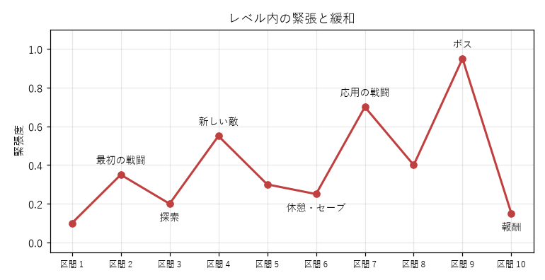
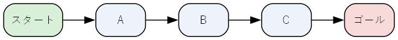
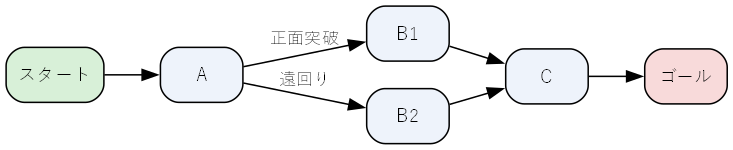
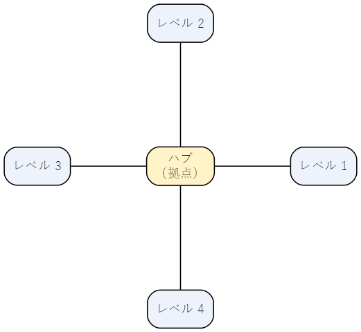

9. レベルの構成とペーシング
第 8 章では、レベルの役割と、プレイヤーを導く技法を学んだ。この章では、レベルの中で体験をどの順番で並べるか（ペーシング）と、レベル全体の構造の設計を扱う。最後に、レベルの構造をグラフとして表し、プログラムで検証する方法を紹介する。
9.1. 新しい要素を見せる 4 つの段階
第 6 章で、新しい要素は段階を踏んで見せるとよいと述べた。ここでは、その段階をレベルの構成方法として具体的に考える。
任天堂のデザイナーである林田宏一は、「スーパーマリオ 3Dランド」の開発について語ったインタビューで、各レベルを起承転結の 4 段階で構成する考え方を紹介している。本書では、この考え方を次の 4 つの段階として整理する。この 4 つの段階は、1 つのレベルの中だけでなく、複数のレベルの並びに当てはめることもできる（第 12 章）。
段階 |
目的 |
例（一定の間隔で出たり引っ込んだりする足場） |
|---|---|---|
導入（起） |
新しい要素に、安全な状況で出会わせる |
地面の上に足場を置く。乗り損ねても下の地面に落ちるだけで、何度でも試せる |
練習（承） |
新しい要素だけに集中して、扱い方を身に付けさせる |
穴の上に足場を 3 つ並べ、タイミングよく渡らせる |
応用（転） |
既に知っている要素と組み合わせたり、意外な使い方を見せたりする |
足場の上に敵が歩いてくる。または足場を使って、普段は届かない高い場所に登る |
結び（結） |
学んだことを確かめさせ、達成感とともにレベルを終える |
足場を連続して渡り切ると、ゴールの旗にたどり着く |
この構成は、新しい要素を 1 つ決めれば、それを中心にレベル全体を組み立てられるという点で実用的である。逆に言えば、1 つのレベルに新しい要素を詰め込みすぎると、それぞれの要素を十分に練習させる余裕が無くなる。
「転」の段階は特に重要である。要素の意外な使い方を見せることで、プレイヤーは「この要素にはこんな使い方もあるのか」と、要素の理解を一段深める。ここで生まれる驚きが、単調な繰り返しを防ぐ。
9.2. 緊張と緩和
レベルの中で、プレイヤーが感じる緊張の度合いを時間に沿って並べたものを、強度（インテンシティ）の曲線と呼ぶことがある。次の図は、アクションゲームの 1 つのレベルの例である。

図 9.1 レベル内の緊張と緩和
緊張が続きすぎるとプレイヤーは疲れ、緩みが続きすぎると退屈する。山（戦闘、難しい足場）と谷（探索、休憩）を交互に置くことで、山の緊張がより強く感じられる。図の例では、次のような考え方で配置している。
最初の山は低くし、レベルの雰囲気と操作に慣れさせる。
新しい敵が出た後は谷を置き、緊張から解放する。
山場の前には休憩とセーブの場所を置き、準備を整えさせる。
最大の山（ボス）の後には報酬を置き、達成感とともにレベルを終える。
これは第 6 章の波型の難易度曲線を、1 つのレベルの中で行うものと考えることができる。
9.3. 敵とアイテムの配置
9.3.1. 敵の配置
敵の強さだけでなく、敵をどこにどう置くかによって、戦闘の難しさと面白さは大きく変わる。
見えている敵と隠れている敵：遠くから見えている敵には、近づく前に作戦を立てられる。曲がり角の先に隠れている敵は緊張感を生むが、多用すると理不尽に感じさせる。
地形との組み合わせ：高い所にいる敵、狭い通路にいる敵、身を隠せる物が近くにある敵では、同じ敵でも戦い方が変わる。
敵の組み合わせ：近づいてくる敵と、離れて撃ってくる敵を組み合わせると、プレイヤーは位置取りを考えなければならなくなる。
戻り道：敵を倒した後の部屋を戻るときに、新しい敵が待ち構えていると、同じ場所でも異なる体験になる。
9.3.2. アイテムの配置
回復アイテムや弾薬などのアイテムは、ペーシングを調整する道具になる。
難しい戦闘の直後に回復アイテムを置くと、苦戦したプレイヤーを救い、次の区間へ進む余裕を与える。
難しい戦闘の直前に置くと、プレイヤーは「この先に何かある」と身構える。予告として使える一方、驚きは減る。
本筋から外れた場所に価値のあるアイテムを置くと、寄り道や探索に報酬を与えられる。第 3 章のエクスプローラーのタイプのプレイヤーは、こうした寄り道を好む。
9.4. レベルの構造
レベル全体を、場所（部屋や区間）とそのつながりで見ると、いくつかの典型的な構造がある。

図 9.2 一本道の構造

図 9.3 分岐と合流の構造

図 9.4 ハブ型の構造
構造 |
特徴 |
長所 |
短所 |
|---|---|---|---|
一本道 |
決まった順番に場所を通る |
体験の順番を完全に制御でき、作りやすい |
プレイヤーの選択の余地が少ない |
分岐と合流 |
途中で道が分かれ、また 1 つにまとまる |
選択の余地を与えつつ、全体の流れは制御できる |
分岐の数だけ作る量が増える |
ハブ型 |
拠点から複数のレベルへ行き来する |
攻略の順番をプレイヤーが選べる |
どの順番でも成り立つように難易度を調整する必要がある |
オープンワールド |
広い空間を自由に移動できる |
探索と発見の楽しさが大きい |
体験の順番を制御しにくく、作る量も非常に多い |
どの構造を選ぶかは、ゲームが重視する楽しさによって決まる。物語を順番に体験させたいなら一本道に近い構造が、探索の楽しさを重視するならハブ型やオープンワールドが向いている。実際のゲームでは、全体はハブ型だが個々のレベルは一本道、というように組み合わせることが多い。
9.5. レベルをグラフとして検証する
レベルの構造を、部屋を頂点、通路を辺とするグラフとして表すと、プログラムで検証できるようになる。ここでは、第 8 章で触れた鍵と扉の配置の誤りを調べる。
次の図は、検証の対象とするレベルの構造である。鍵の掛かった通路には、開けるのに必要な鍵の名前を付けている。
![graph keys {
node [shape=box, style="rounded,filled", fillcolor="#eef3fb"];
entrance [label="入口", fillcolor="#d8f0d8"];
hall [label="広間"];
east [label="東の通路"];
store [label="倉庫\n（赤の鍵）", fillcolor="#fde0e0"];
tower [label="北の塔\n（青の鍵）", fillcolor="#e0e8fd"];
basement [label="地下"];
boss [label="ボス部屋", fillcolor="#f8dada"];
entrance -- hall;
hall -- east;
east -- store;
hall -- tower [label="赤の扉", color="#c04040", fontcolor="#c04040", penwidth=2];
hall -- basement [label="青の扉", color="#3060c0", fontcolor="#3060c0", penwidth=2];
basement -- boss;
}](_images/graphviz-c6cea6f6c42880d98cb8d80d126221603c0eefef.png)
図 9.5 鍵と扉のあるレベルの構造
検証の手順は次のとおりである。
手持ちの鍵で通れる通路だけを使って、スタートから行ける部屋を幅優先探索（BFS）で求める。幅優先探索は、出発点から近い順に頂点を調べるグラフの探索方法である。
行ける部屋に、まだ持っていない鍵があれば拾い、手順 1 に戻る。
ゴールに行ければ成功である。新しい鍵が見つからないのにゴールに行けなければ、そのレベルは攻略できない。
リスト 9.1 は、この手順を実装したものである。
18@dataclass(frozen=True)
19class Passage:
20 """2 つの部屋をつなぐ通路。lock が None でなければ、その鍵が必要である。"""
21
22 a: str
23 b: str
24 lock: str | None = None
25
26
27@dataclass
28class Level:
29 start: str
30 goal: str
31 passages: list[Passage]
32 keys: dict[str, str] = field(default_factory=dict) # 部屋の名前 → その部屋にある鍵
33
34 def neighbors(self, room: str, held: set[str]) -> list[str]:
35 """手持ちの鍵 held で通れる通路の先にある部屋を返す。"""
36 result: list[str] = []
37 for p in self.passages:
38 if p.lock is not None and p.lock not in held:
39 continue
40 if p.a == room:
41 result.append(p.b)
42 elif p.b == room:
43 result.append(p.a)
44 return result
45
46
47def reachable(level: Level, held: set[str]) -> list[str]:
48 """手持ちの鍵で行ける部屋を、幅優先探索で見つけた順に返す。"""
49 visited = [level.start]
50 queue = deque([level.start])
51 while queue:
52 room = queue.popleft()
53 for nxt in level.neighbors(room, held):
54 if nxt not in visited:
55 visited.append(nxt)
56 queue.append(nxt)
57 return visited
58
59
60def check(level: Level) -> bool:
61 """鍵を拾いながら探索を繰り返し、ゴールに着けるかを表示して返す。"""
62 held: set[str] = set()
63 step = 1
64 while True:
65 rooms = reachable(level, held)
66 new_keys = {level.keys[r] for r in rooms if r in level.keys} - held
67 print(f" 段階 {step}: 行ける部屋 = {', '.join(rooms)}")
68 if level.goal in rooms:
69 print(f" → ゴール「{level.goal}」に到達できる")
70 return True
71 if not new_keys:
72 all_rooms = {p.a for p in level.passages} | {p.b for p in level.passages}
73 stuck = sorted(all_rooms - set(rooms))
74 print(f" → 新しい鍵が無く、先に進めない（行けない部屋: {', '.join(stuck)}）")
75 return False
76 print(f" 拾った鍵 = {', '.join(sorted(new_keys))}")
77 held |= new_keys
78 step += 1
main 関数では、青の鍵を北の塔に置いた正しい配置と、青の扉の向こうの地下に置いてしまった誤った配置の 2 つを検証している。実行すると次のように表示される。
1正しい配置（青の鍵は北の塔にある）
2 段階 1: 行ける部屋 = 入口, 広間, 東の通路, 倉庫
3 拾った鍵 = 赤の鍵
4 段階 2: 行ける部屋 = 入口, 広間, 東の通路, 北の塔, 倉庫
5 拾った鍵 = 青の鍵
6 段階 3: 行ける部屋 = 入口, 広間, 東の通路, 北の塔, 地下, 倉庫, ボス部屋
7 → ゴール「ボス部屋」に到達できる
8
9破綻した配置（青の鍵が、青の扉の向こうの地下にある）
10 段階 1: 行ける部屋 = 入口, 広間, 東の通路, 倉庫
11 拾った鍵 = 赤の鍵
12 段階 2: 行ける部屋 = 入口, 広間, 東の通路, 北の塔, 倉庫
13 → 新しい鍵が無く、先に進めない（行けない部屋: ボス部屋, 地下）
この検証は、レベルが攻略可能かどうかを判定するだけでなく、プレイヤーが鍵を手に入れる順番（段階）も示している。段階の数や、各段階で行ける範囲の広さは、レベルの進行の設計を見直す材料になる。例えば、段階 1 で行ける範囲が広すぎるなら、プレイヤーは最初の鍵を探して長く迷うかもしれない。
なお、このサンプルでは鍵を何度でも使えるものとしている。1 回使うと無くなる鍵の場合は、どの扉に鍵を使うかという選択が生まれ、使い方によっては先に進めなくなる。このような場合は、手持ちの鍵と開けた扉の組み合わせまで含めた状態を探索する必要がある。その考え方は、第 12 章の総合演習で、レベルの解を探すプログラムとして扱う。
9.6. 演習
好きなゲームのレベルを 1 つ選び、新しい要素を見せる 4 つの段階がどこに当たるかを説明せよ。当てはまらない場合は、どのような構成になっているかを説明せよ。
同じレベルについて、緊張と緩和の曲線を描け。
level_graph.pyに、緑の鍵と緑の扉を追加したレベルを作り、検証せよ。わざと攻略できない配置も作り、検証で見つかることを確かめよ。一本道、分岐と合流、ハブ型のうち 1 つを選び、その構造を持つレベルの部屋のつながりを図に描け。